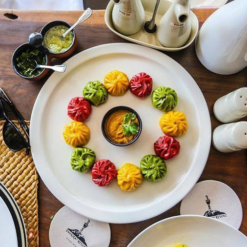

Nepal
Menu of Atithi Satkar Restaurant
Home
Transportation
Hotel
Contact
Restaurant
Menu
Menu
Starter
Bhatmas Sandeko (Marinated Soyabean with Nepalese style)
Aloo Tareko (Potatos fried in Nepali style)
Woh (Pancake made from freshly ground black lentils)
Veg Momocha (Minched vegetable mixed with spices, wrapped in flour Dough and Steamed)
Entree
Sada Bhuja (Steamed Rice), Kalo Daal (Black Lentil)
Mismas Tarkari (Seasonal Mixed Vegetable)
Kukhura ko Masu (Chicken Curry in Nepali style)
Bandel Tareko (Fried Wild Boar in Nepali style),
Golvedako Achar (Fresh Tomato Pickle)
Mismaas Tarkari ( Seasonal Mixed Veg)
Beverage:
Coffee
Tea(Milk/Black/ Nepali)
Milk
Hot Lemon with ginger, honey
